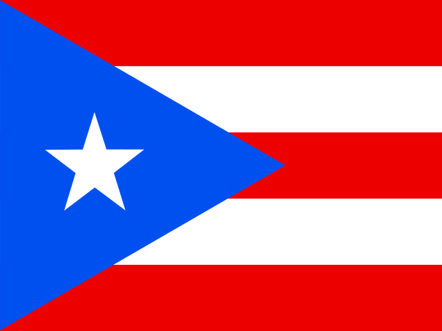
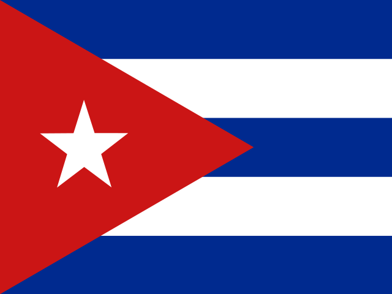

북아메리카 국가별 1인당 국민총소득(GNI) 순위 (2024년)
국내외에서 해당 국가의 거주자가 벌어들인 총소득을 인구로 나눈 값. 각 연도의 환율을 적용해 미국 달러로 환산합니다.
표시 중: 34개 (23개국, 속령 11곳)
높은 순
2024
| 1 | 버뮤다 | 13.55만 | ||
| 2 | 미국 | 8.39만 | ||
| 3 | 케이맨 제도 | 8.07만 | ||
| 4 | 그린란드 | 6.04만 | ||
| 5 | 캐나다 | 5.62만 | ||
| 6 | 영국령 버진아일랜드 | 4.23만 | ||
| 7 | 터크스 케이커스 제도 | 3.89만 | ||
| 8 | 바하마 | 3.81만 | ||
| 9 | 신트마르턴 | 3.74만 | ||
| 10 | 아루바 | 3.71만 | ||
| 11 | 앵귈라 | 3.13만 | ||
| 12 |  |
푸에르토리코 | 2.64만 | |
| 13 | 바베이도스 | 2.58만 | ||
| 14 | 세인트키츠 네비스 | 2.37만 | ||
| 15 |  |
쿠바 | 2.26만 | |
| 16 | 앤티가 바부다 | 2.2만 | ||
| 17 | 퀴라소 | 1.94만 | ||
| 18 | 파나마 | 1.82만 | ||
| 19 | 몬트세라트 | 1.78만 | ||
| 20 | 코스타리카 | 1.72만 | ||
| 21 | 트리니다드 토바고 | 1.69만 | ||
| 22 | 멕시코 | 1.37만 | ||
| 23 | 세인트루시아 | 1.31만 | ||
| 24 | 세인트빈센트그레나딘 | 1.12만 | ||
| 25 | 그레나다 | 1.06만 | ||
| 26 | 도미니카 | 1.04만 | ||
| 27 | 도미니카 공화국 | 1.03만 | ||
| 28 | 자메이카 | 7,588 | ||
| 29 | 벨리즈 | 7,397 | ||
| 30 | 과테말라 | 6,036 | ||
| 31 | 엘살바도르 | 5,224 | ||
| 32 | 온두라스 | 3,158 | ||
| 33 | 니카라과 | 2,705 | ||
| 34 | 아이티 | 2,150 |


© 2026 Geostarna